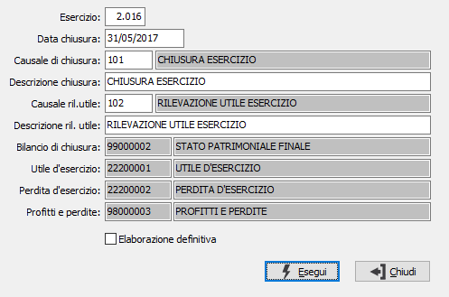

Elaborazione chiusura
Il programma effettua la chiusura d’esercizio, effettiva o simulata, generando sia la scrittura contabile di rilevazione dell’utile o della perdita, sia le scritture contabili di giroconto a Profitti e perdite e a Stato Patrimoniale finale.
Per eseguire tali scritture, il programma utilizza una causale contabile di “chiusura”, desunta automaticamente dalla Tabella Codici fissi, e una causale contabile di “rilevazione utile (o perdita)” che invece deve essere impostata dall’utente.
Una particolare attenzione va posta, in questa fase, a tali causali: esse, devono avere la spunta nel check box “Movimento esercizio precedente” se la chiusura viene effettuata in una data dell’esercizio successivo. Se invece la chiusura viene effettuata con la data dell’ultimo giorno dell’esercizio contabile, il check box deve essere vuoto.
La causale della rilevazione dell’utile serve esclusivamente per la sua descrizione e, appunto, per l’eventuale spunta esercizio precedente perché il programma provvede da solo ad imputare correttamente i conti Profitti e Perdite, Utile d’esercizio, Perdita d’esercizio.
È possibile effettuare una elaborazione preliminare di prova stampando gli articoli contabili generati dal programma.
Scegliere Contabilità, Operazioni di fine esercizio, Elaborazione chiusura. Appare la seguente maschera video:

Ad eccezione della data di chiusura, della causale di rilevazione utile, e del tipo operazione, tutte le altre informazioni vengono proposte automaticamente. Gli articoli contabili della chiusura non possono essere variati dall’operatore, perché l’esecuzione definitiva di questo programma “chiude” definitivamente l’esercizio. In caso di necessità, il Servizio Assistenza Software può rendere reversibile una chiusura definitiva. Le registrazioni contabili di chiusura devono ovviamente essere stampate sul giornale.